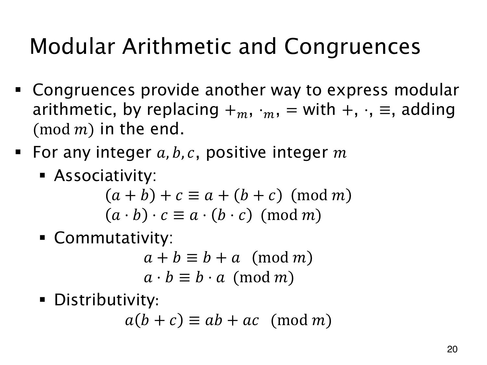

L1.12 · 第 20 页讲解原文
查看这一页课件

把运算写成同余式
7+119=5 可以改写为 7+9≡5(mod11)。16 与 5 代表同一个余数类别，但普通整数等式 7+9=5 仍不成立。
这种写法把 +m,⋅m,= 换成普通的 +,⋅,≡，并注明模数。比较的是两边的余数，不必每一步都显式写出取模。
对整数 a,b,c 和正整数 m，结合律写作
(a+b)+c≡a+(b+c)(modm),(ab)c≡a(bc)(modm).
交换律则是 a+b≡b+a(modm)、ab≡ba(modm)，分配律为
a(b+c)≡ab+ac(modm).
这些式子的两边在整数中已经相等，模同一个 m 自然也同余。因而在模计算中，调整括号、交换顺序、展开乘法都有依据。